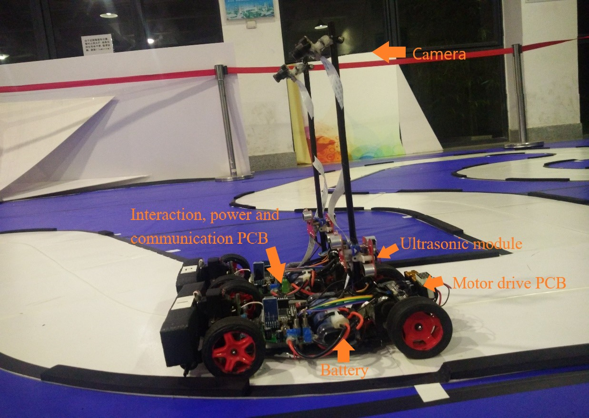
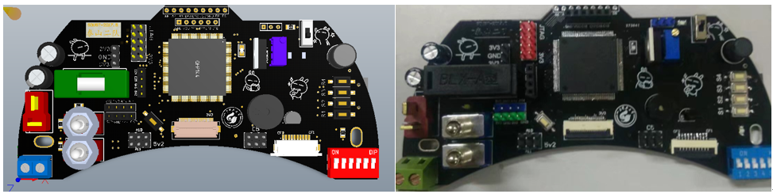
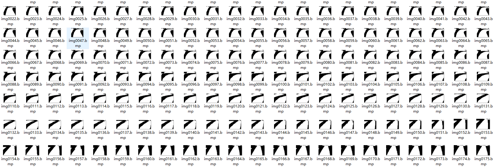
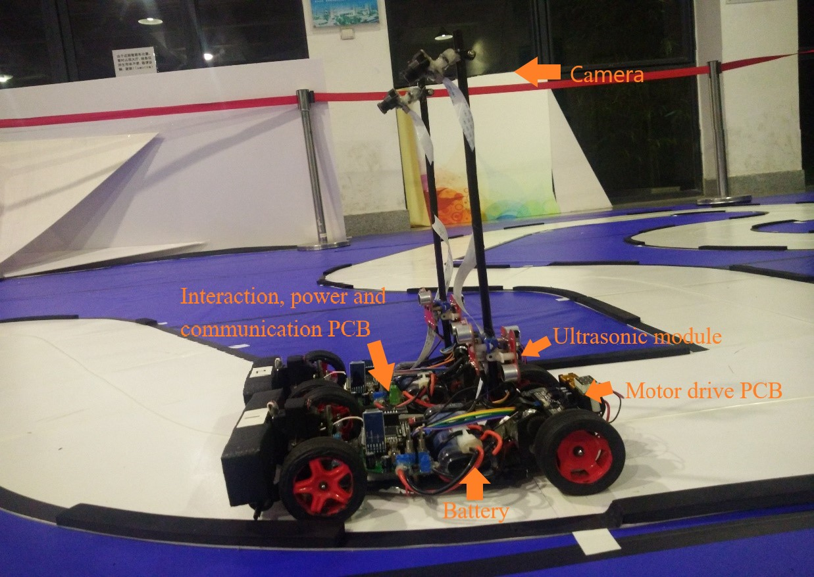
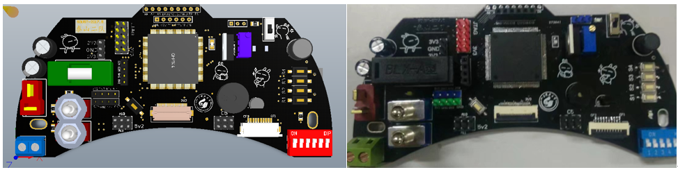
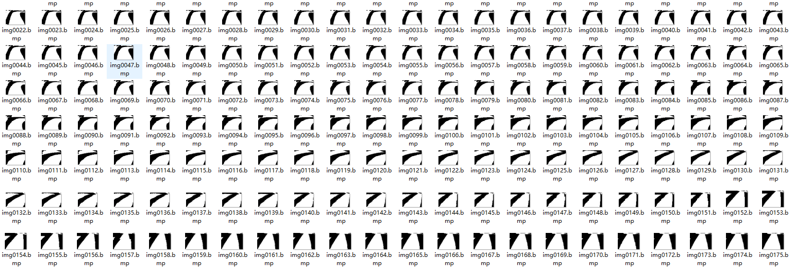

The demonstration of our autonomous driving method
Fig. My autonomous car's appearance
Fig. Printed circuit board
Fig. Preprosessed binary image of road

Fig. Routine test
NXP Cup: Students Build and Race Autonomous Model Cars
Fig. competition venue
|
Months in advance of the competition, each team built an autonomous model car using the base components from NXP that includes a car chassis, four tires, and two motors. We need to design the controller circuit and motor driver circuit. Also design the mechanical structure to install the camera, servomotor, various sensors to get information and control steering and speed. To build a reliable autonomous model car that was fast and stable, the necessary part is the algorithm which is exactly my duty in the team. In this process, we learned software coding, hardware design, and some mechanical design, getting exposure to new concepts like Enterprise Schedule Management, version control and collaboration.
We coded, tested, debugged, and deployed for a better and more stable result. During each trial along the design path, we learned what is the key to building a reliable autonomous model car. And, collaboration and teamwork were critical to completing this task during the long seven-month preparation time. After the cars were built, rounds of competitions were held at the college, city, and province to determine the advancing teams. During each leg of the competition, all teams who advanced in last round raced their cars for the fastest time running on a track of curves, intersections, hills, bumpy roads and straights that simulated a real-world road experience the fastest without derailing won. We got the first prize respectively in the college, city and province competition. |
Fig. Data analysis about the speed and direction of the car
The demonstration of our autonomous driving method
Fig. My autonomous car's appearance
Fig. Printed circuit board
Fig. Preprosessed binary image of road
Fig. Routine test